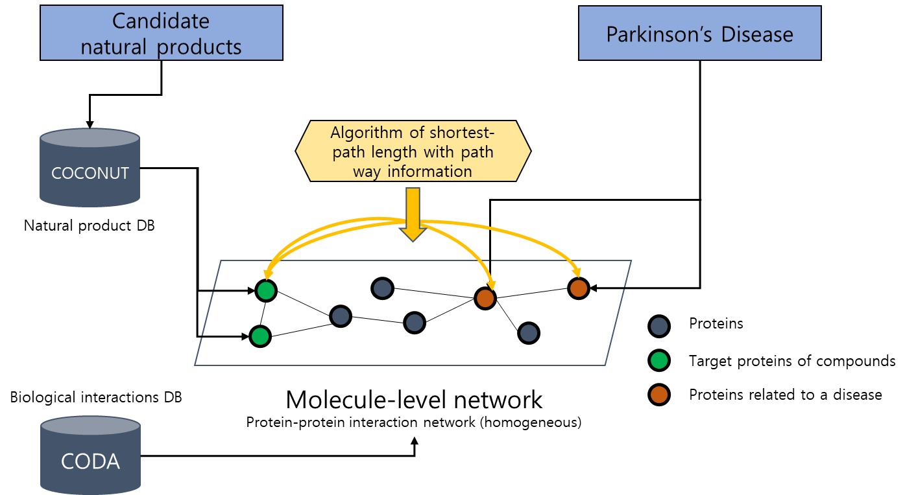
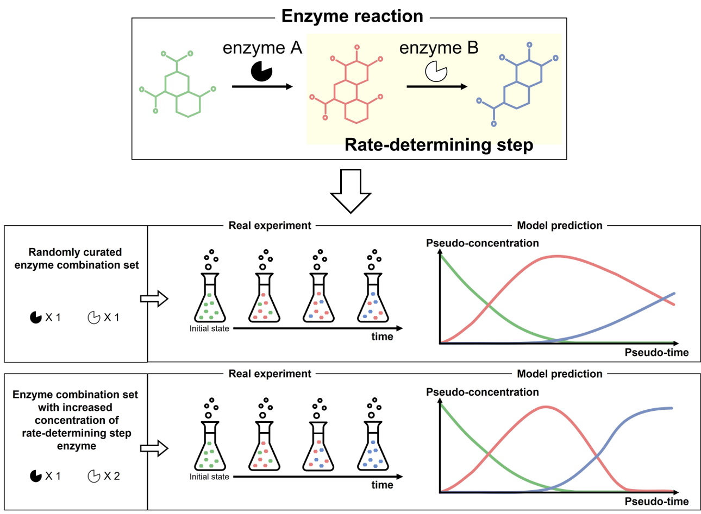
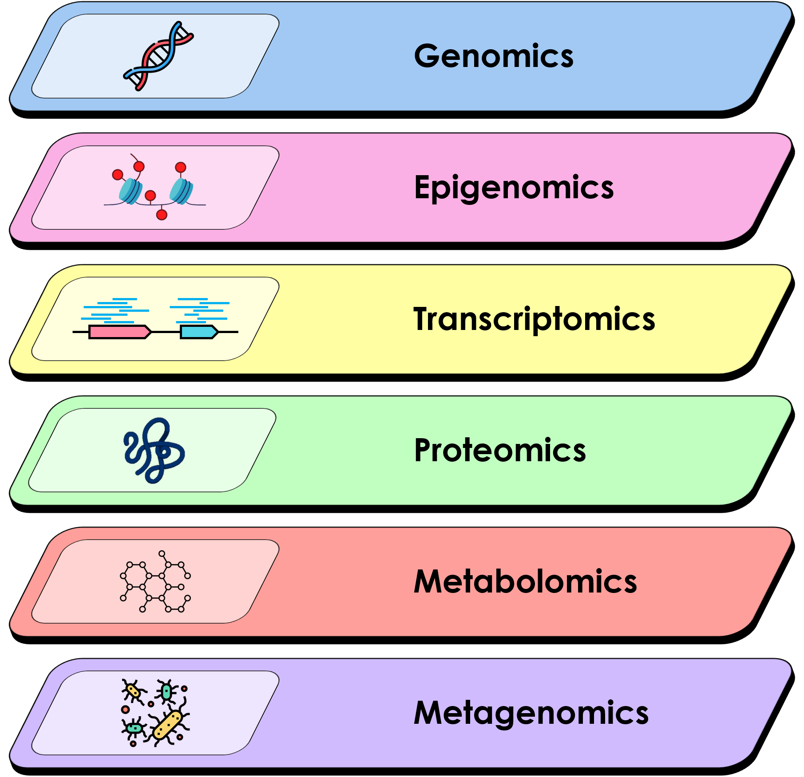

-
01 MDAN(Multi-target Drug analysis with AI and Network biology)
Natural products have multiple components and multiple targets and MDAN team analyzes lead compounds and lead targets using network-based and machine learning-based methods.
Network-based analyses are optimal to consider MDAN and understand natural product's mechanism for treatment. MDAN team constructs network (multi-layer network, microbiome network, inter-organ network …) and analyzes the network (proximity-based algorithm, random walk restart, deep learning methods …) to find out lead compounds and targets.
Collaboration with MTHERA PHARMA : Based on lead compounds and targets with MDAN approach, collaborator, MTHERA PHARMA validates our results using in vivo/vitro experiments. Using the in vivo/vitro experiment results, MDAN team fine-tunes analysis.
Current project : Develop pre-trained AI model to find natural products for neurodegenerative disease treatment.
-
02 MODA(Model-guided Data-driven Analysis)
At BISL Laboratory, we are dedicated to transforming basic materials into high-value pharmaceuticals, a significant challenge in both academia and industry. Our research strategies are designed to drive innovations in biotechnology.
Knowledge-Based Model Design : Our team integrates deep life science insights with advanced computational methods to develop machine learning models. These models exhibit superior performance and interpretability, essential for breakthroughs in synthetic biology. This approach bridges the gap between biological understanding and computational efficiency.
Data Augmentation : To tackle the challenge of insufficient data in synthetic biology, we engage in data augmentation, creating synthetic data based on existing datasets. This method, referred to as data augmentation, boosts data volume and diversity, thereby improving our models' efficacy and robustness.
Active Learning : Active learning is a machine learning technique we use to predict which additional experiments should be conducted based on existing data. This approach efficiently guides experimental design, optimizing resource use and accelerating discovery in synthetic biology. It represents a cost-effective solution to enhance research outcomes by focusing on the most impactful experiments.
-
03 Multi-omics analysis and their application on neuropsychiatric disorders
“Omics” research refers to the collective characterization and quantification of pools of biological molecules that translate into the structure, function, and dynamics of an organism or organisms. The multi-omics analysis encompasses various range of analyzing biological molecules, also including the microorganism-levels. Multi-omics approach for the investigation of biological phenotypes aims for the collective analysis of molecular-level endophenotypes that can be found in multiple tissues over the whole body. Through this, we can inspect the phenotype of interest in many aspects, which leads us to discover a step-by-step mechanism of that phenotype.
Currently, we are focusing on mental disorders such as schizophrenia, major depressive disorder, and bipolar disorder. For this, we are currently collaborating with the Stanley Medical Research Institute(SMRI) to be provided with valuable multi-omics resources collected from post-mortem brain samples.
Major Publications
- Interpretation of SNP combination effects on schizophrenia etiology based on stepwise deep learning with multi-precision data, Briefings in Functional Genomics, (2023)
- Shared co-expression networks in frontal cortex of the normal aged brain and schizophrenia, Schizophrenia Research, (2019)
- Identification of common coexpression modules based on quantitative network comparison, BMC Bioinformatics, (2018)